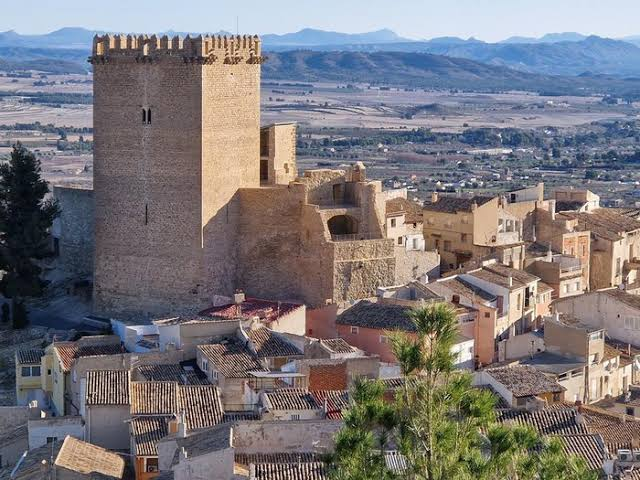

El castillo tiene su origen en una fortificación musulmana levantada para controlar el territorio montañoso del noroeste murciano. Formaba parte de la red defensiva de la frontera entre Al-Ándalus y los reinos cristianos. La torre destaca por su diseño defensivo y en su interior se encuentra con tres plantas principales: en la parte inferior el aljibe, en la primera planta sala de armas, segunda planta sala del homenaje y tercera planta la terraza, incluyendo una escalera de caracol interior y ventanas ajimezadas. Además de la torre del homenaje, el recinto incluye patio de armas y otros torreones, como: la Torre Redonda, Blanca, Magdalena, Quebrada o de los Limones y la de los Cuatro Vientos.
• Torre del Homenaje: Estructura de planta cuadrada con 22 metros de altura y muros de hasta 3 metros de espesor. Se divide en tres plantas abovedadas y una terraza superior con almenas. • El Albacar: Gran recinto amurallado de origen musulmán que servía como refugio para la población y el ganado en caso de ataque. • Sistema Defensivo: Una muralla exterior reforzada por seis torres principales diseñadas para la defensa perimetral. • Las Seis Torres: Además de la del Homenaje, el castillo cuenta con las torres Redonda, Blanca, de la Magdalena, Quebrada y de los Cuatro Vientos.